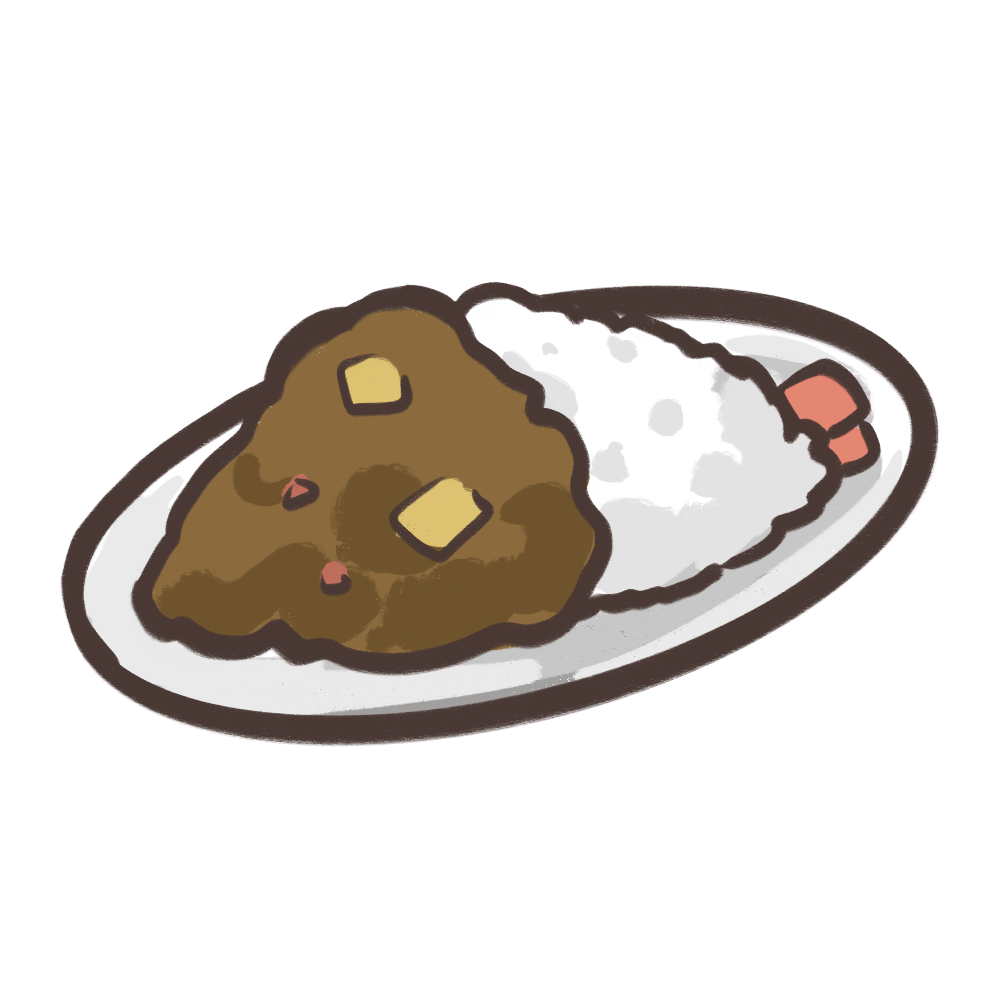

Ingredients
- Vegetable oil2 tbsp
- Beef chuck steak600 g
- Onion1
- Garlic cloves2 pc
- Ginger2 tbsp
- Tomato paste2 tbsp
- Massel Beef Style Liquid Stock500 ml
- Apple1
- Red potatoes300 g
- Carrot2
- Soy sauce2 tbsp
- Steamed white riceany
- Sliced green shallotsany
Japanese curry (カレー, karē) is commonly served in three main forms: curry over rice (カレーライス, karē
raisu), curry udon (curry over thick noodles), and curry bread (カレーパン, karē pan) (a curry-filled
pastry). It is one of the most popular dishes in Japan.[1] The very common "curry rice" is most
often referred to simply as "curry" (カレー, karē).
How to cook:
| 1. | Heat 1 tbsp oil in a large flameproof casserole dish over medium-high heat. Add the beef and cook, in 2 batches, turning occasionally, for 3-4 minutes or until browned. Transfer to a plate. |
| 2. | Reduce heat to medium. Heat remaining oil pan. Add the onion and cook, stirring occasionally, for 4 minutes or until lightly browned. Add garlic and ginger, and cook, stirring, for 30 seconds or until aromatic. Add the tomato paste (2 tbsp tomato paste) and cook, stirring, for 30 seconds or until combined. |
| 3. | Gradually add the stock, stirring and scraping to dislodge any bits that have cooked onto the base, until combined. Add apple and beef and stir until combined. Bring to a simmer. Reduce heat to low then cover and cook, stirring occasionally, for 1 hour. Add potato and carrot. Cook, covered, for a further 1 hour or until beef is very tender. |
| 4. | Meanwhile, to make the curry roux, melt the butter in a small frying pan over medium-low heat. Add the flour and cook, stirring, for 2 minutes. Add curry powder and garam masala and cook, stirring, for 1 minute or until aromatic. |
| 5. | Add roux to beef mixture, 1 teaspoonful at a time, stirring well after each addition until combined. Cook, stirring, over low heat for 5 minutes or until liquid has thickened. Stir in soy sauce. |
| 6. | Serve curry with steamed rice, sprinkled with green shallots, if using. |